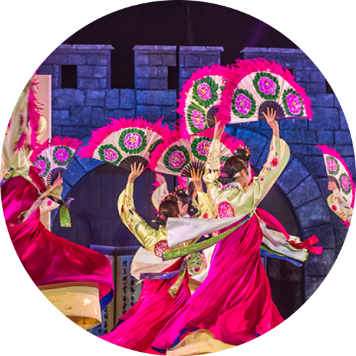
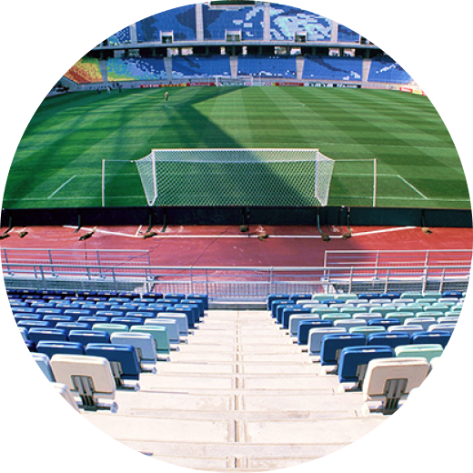

About Suwon
Introduction to Suwon City
Suwon City Overview
-
January 13, 2022
Establishment of
Suwon City -
Size
121㎢
-
Population
1.25 million
(As of Jan. 17, 2023)
-
Administrative division
44 administrative
divisions (dong)
A city where traditions and future co-exist
-
Planned City
Joseon Dynasty’s first planned city built together by the King and its people
-

City Steeped in History
Home to UNESCO World Heritage site
-

High-tech City
Hosting several, major industrial bases of Korea
-

City of Sports
First local government to field teams in all 4 major sports leagues, with 6 professional teams
Safe City Suwon
-
In cooperation with local safety-related institutions
Permanent crisis response system for public facilities in place
(Applied the Ministry of Interior and Safety’s “Local Festival Safety Management Manual”)
-
Formed and operate a dedicated department for comprehensive disaster & safety management, and self-defense unit
- Command Center+Partnering business+Fire Dept.+Police Station+Medical institution
- Quarterly anti-terrorism / fire drills
-
Recorded '1st Grade in Local Safety Index for Traffic Accidents’ for 8 years in a row
(Announced by the Ministry of Interior and Safety, 2015-2022)
-
Launched "Saebit Safety Scout” consisting of citizens and public officers
- Monitor risks 24/7
- Report accidents & disasters
- Respond to emergencies
-
Declared “Three S (Safe, Secure, Stable) Suwon”
(Suwon City, Suwon Nambu & Jungbu & Seobu Provincial Polices, Suwon Fire Station)
International Tourist Destination Suwon
Successful hosting of global events
Global City
Gyeonggi Province’s major city forTourism, Culture, Festival
-

‘50 Beautiful Places to Visit in Korea’(CNN,2021)
(Ministry of Culture, Sports and Tourism, Korea Tourism Organization, 2021)
-
Honored as ‘Star of Korean Tourism that shines the country’s tourism’
(Ministry of Culture, Sports and Tourism, 2011, 2021)
-
‘Korea’s Best Tourist Attraction’ , ‘100 Must-Visit Tourist Spots in Korea’
(Ministry of Culture, Sports and Tourism, 2011, 2021)
-
Korea’s major cultural, tourism festival ‘Suwon Hwaseong Cultural Festival’
(Ministry of Culture, Sports and Tourism, 2020-2022)